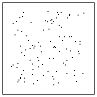
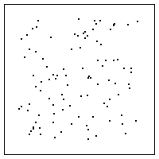
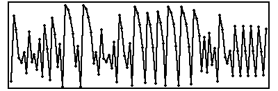

| 1. Pictured below are IFS driven by iterating a function. |
| (a) | |
(b) |
|
| Draw the transition graph of this driven IFS
and draw the graph of a function that would produce this driven IFS. |
| Here is the solution. |
| |
| 2. (i) Pictured below are the graphs of two functions.
Draw the driven IFS transition graph for these functions.
Explain how you arrived at the graphs. |
(ii)
 (b)
(b)  |
| (b) Use the IFS with memory software to generate this fractal. |
| Here is the solution. |
| |
| 3. Pictured below is an IFS driven by iterating a function. |
|
| Draw the graph of a function that would produce the IFS. |
| Explain how you arrived at your answer. Your explanation should include explicit
mention of the forbidden addresses that occur. |
| Here is the solution. |
| |
| 4. Pictured here is the graph of the s = 2
tent map T(x). |
|
| (a) This tent map has two fixed points, one is 0 and the other is
greater than 1/2. Call this fixed point x*.
Find the exact value of the nonzero fixed point. |
| (b) Use graphical iteration to locate four points a, b, c, and d satisfying
T2(a) = T(T(a)) = x*, T2(b) = x*,
T2(c) = x*, and T2(d) = x*. (Hint: reverse
the process of graphical iteration.) |
| (c) Find the exact values of a, b, c, and d. |
| Here is the solution. |
| |
| 5. This problem involves iterating a function defined by two straight line segments. The
left has slope 8, the right has slope -1. |
 |
| (a) Use graphical iteraton to find two distinct 2-cycles. |
| (b) Are these 2-cycles stable, unstable, or neither? Support your answer. |
| Here is the solution. |
| |
| 6. This problem involves driving an IFS by iterating the function
shown in blue below. For reference the bins
are indicated along both the x- and y-axes. |
|
| (a) Do these bins form a Markov partition? Support your answer. |
| (b) Only one of these could be the driven IFS obtained by iterating
this function. Which is it? Support your answer. |
|
| Here is the solution. |
| |
| 7. Pictured below are three return maps. |
| One of these, L, C, and R, is generated by a sequence of numbers xi in
which xi and xi+1 are nearby. |
| Another is generated by a sequence of numbers in which successive values
xi and xi+1 sum to about 1. |

 
 |
| Say which is which and explain how you arrived at your conclusion. |
| Here is the solution. |
| |
| 8. Does this function (the red graph) exhibit chaotic
behavior? Explain how you arrived at your answer. |
|
| Here is the solution. |
| |
| 9. Pictured below are two return maps and two time series. Say
which corresponds to which, and give a reason to support your choice. |
(a) (b)
(b) |
| (c)  |
(d)  |
| Here is the solution. |
| |
| 10. Could either or both of these be the return maps of time series
obtained iterating a function? Support your answer. |
 |
| Here is the solution. |
| |
| 11. Pictured below is an IFS driven by iterating a function. |
|
| Draw the transition graph of this driven IFS;
draw the graph of a function that would produce this driven IFS.
Explain how you arrived at these answers. |
| Here is the solution. |
| |
| 12. (a) Pictured here is the graph of a function.
Draw the driven IFS transition graph for this function.
Explain how you arrived at this graph. |
|
| (b) Use the IFS with memory software to generate this fractal. |
| (c) By the complement of a transition graph we mean the graph obtained
from the complete graph of all 16 arrows by removing every arrow present in the
original transition graph. Without using the IFS with memory sofrware,
sketch the shape produced by the complement of the transition graph of 12(a).
Explain how you arrived at this answer. |
| (d) Using your answers to (b) and (c), what comment can you make about the
relation between the IFS of complementary transition graphs? |
| Here is the solution. |
| |
| 13. For the return map pictured here, sketch the transition graph for
the corresponding driven IFS. Using this transition graph, would the IFS with
memory produce the same image as the IFS driven by the time series of this return map?
Explain your answer. |
 |
| Here is the solution. |
| |
| 14. Pictured below is an IFS driven by iterating a function. |
 |
| Draw the transition graph of this driven IFS; draw the graph of a function that
would produce this driven IFS.
Explain how you arrived at these answers. |
| Here is the solution. |
| |
| 15. Pictured below is the graph of a tent map |
| T(x) = (3/2)x for 0 ≤ x ≤ 1/2 and
T(x) = 3/2 - (3/2)x for for 1/2 ≤ x ≤ 1 |
| We know that for any sequence x0, x1, x2, ...
generated by iterating T (that is, xi+1 = T(xi)) the
first return map (xi, xi+1) consists of points lying
on the graph of T(x). |
|
| (a) Show that the second return map (xi, xi+2)
consists of points lying on the graph of T2(x) = T(T(x)). |
| (b) Find A = T2(1/2). Find B and C for which T(B) = 1/2 = T(C)
and B < 1/2 < C. |
| (c) Use the results of (b) to plot the graph of T2. |
| Here is the solution. |
| |
| 16. Pictured here is the return map for a time series, with the bin boundary 2 drawn on
both the x and y axes. |
| Sketch bin boundaries 1 and 3, on both the x and y axes, forming a Markov
partition for this return map. |
|
| Here is the solution. |
| |